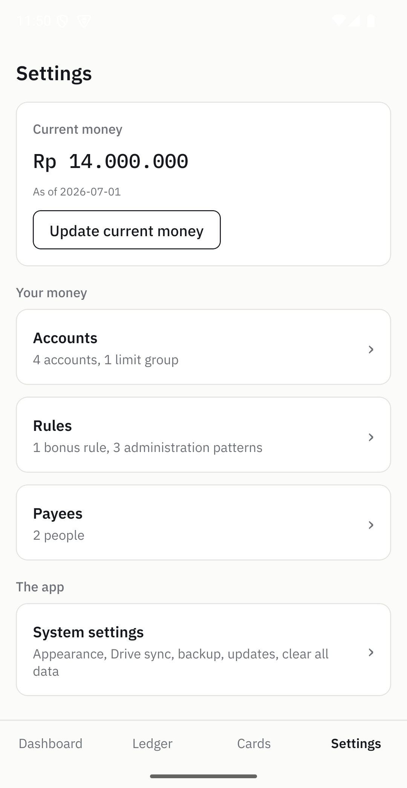

Set it up
Everything on the Dashboard is built from what you enter here.
Sisaldo ships with nothing configured, because the numbers are only worth anything if the cards and limits behind them are yours.

Start with one account
A fresh install has no accounts at all, so the Dashboard has nothing to show and says so. Tap Add an account to begin. An account is either a credit card or cash, and you can have as many of each as you like.

Name it, set its limit, give it a colour
A credit card needs a limit; cash does not have one. The colour is not decoration: it tags that account everywhere it appears, so a glance at the Ledger tells you which card a row belongs to without reading the name.
Leave Limit group on No group unless several cards share one ceiling between them, which the next step covers.

Your accounts, in the order you want them
Everything you add is listed here with its limit. Reorder with the arrows, since that order is the one the Dashboard and the pickers use. Deactivating a card keeps all its history but stops it appearing when you add something new, which is what you want for a card you have closed.

When two cards share one limit
Some banks issue several cards that draw on a single credit line. Adding them up would tell you that you have far more room than you do. A limit group holds the real shared ceiling, and availability is then reported for the group rather than for each card.
In the example, two cards with limits of 25 and 15 million share a ceiling of 30 million, so the group is what gets tracked.

Track a card's perk without counting by hand
Many cards give something back for using them a set number of times, or for spending past a threshold, within each statement period. A bonus rule describes that, and the Dashboard then shows how close you are.
- Count mode counts qualifying purchases; Total amount mode adds them up.
- A minimum per-usage amount stops small purchases from counting.
- Reset day is the day of the month the count starts over, matching your statement.
- Fees and refunded purchases can be excluded, so the count matches what the bank will actually credit.

Tell it how much money you have right now
This is the one figure Sisaldo cannot work out for itself: what is in your wallet and your bank at this moment. Set it, and everything about what you have left is calculated from there.
You do not need to keep it updated constantly. Set it again whenever it has drifted, typically after payday, and the app applies everything recorded since on top of it.